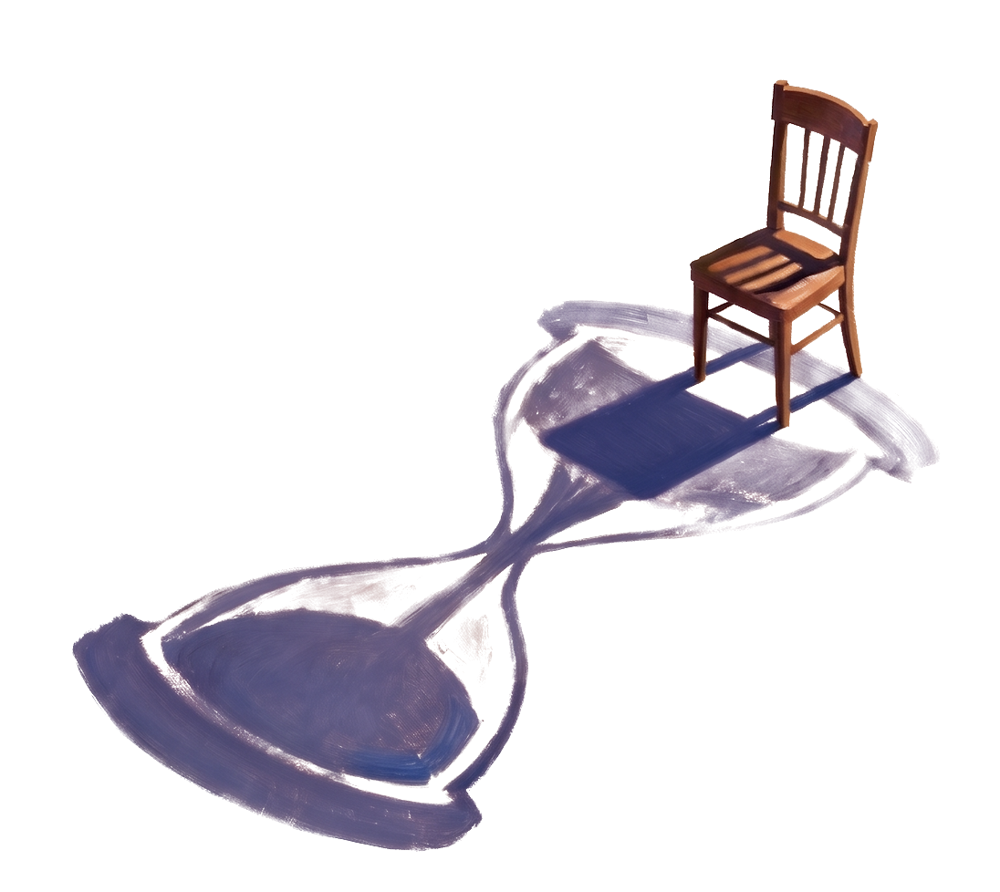
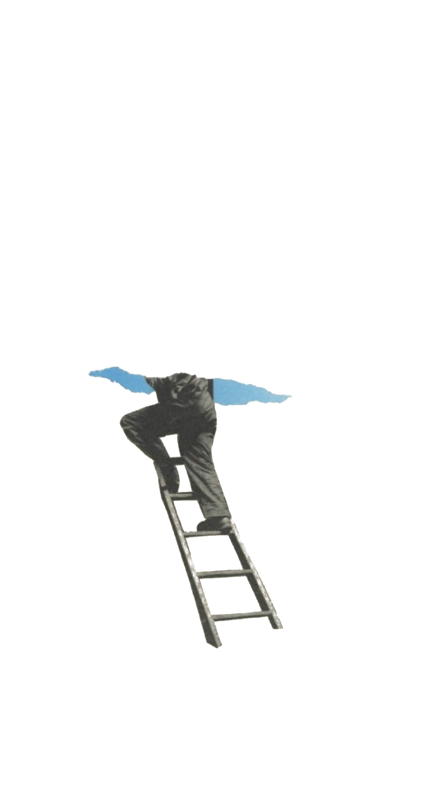

Bienvenue
La soirée va commencer. Gardez cette page ouverte : elle se mettra à jour toute seule.

La mission d'entrée est fermée pour le moment.
C'est noté
Merci. Gardez cette page ouverte : la suite s'affichera ici.
Trouvez quelqu'un qui…
Puis rejoignez votre îlot.
Votre îlot
Rejoignez la table qui porte ce numéro.

Pol’ quiz
Le quiz n'est pas encore ouvert.
Une seule réponse par îlot. N'importe qui à votre table peut répondre — tout le monde avance ensemble.
C'est noté
Merci. Gardez cette page ouverte : la suite s'affichera ici.
Vos propositions
La saisie n'est pas encore ouverte.
Deux propositions pour votre îlot. N'importe qui à votre table peut les écrire ou les corriger — le texte se synchronise entre vos téléphones.
Vote
Le vote n'est pas encore ouvert.
« Motus » compte comme un avis neutre. « Passer » retire la carte sans compter.
Vous avez tout vu
Merci. Regardez l'écran : les résultats arrivent.
Regardez l'écran
Les résultats sont projetés dans la salle.

Avant de partir
Le questionnaire n'est pas encore ouvert.
Six questions, deux minutes — les deux premières d'un seul doigt. Répondez à ce que vous voulez, rien n'est obligatoire. Vos réponses restent anonymes.
Merci
C'est envoyé. Bonne soirée — et à bientôt sur etonnamment.fr.